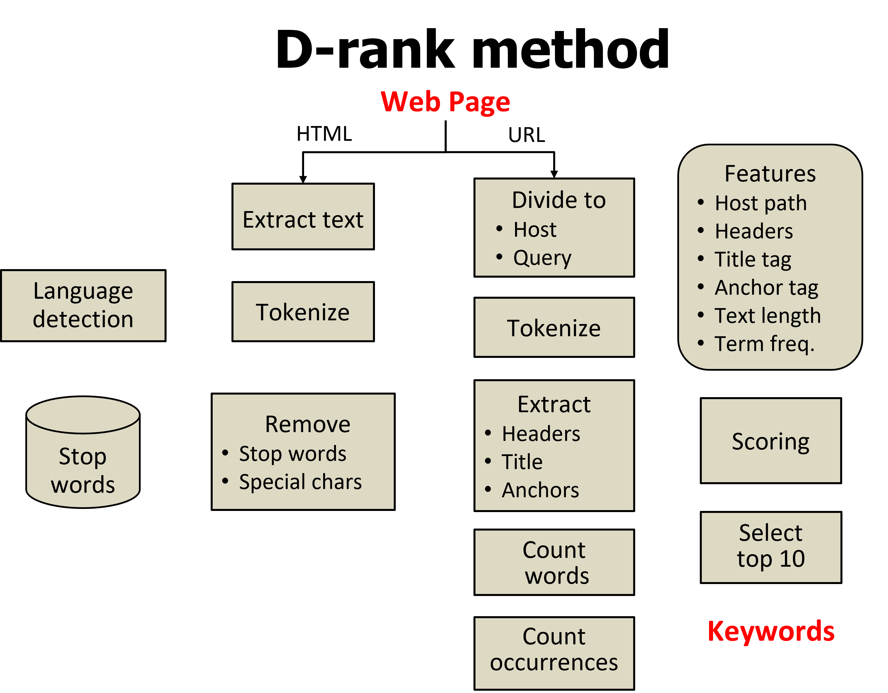

work deals with webpage keyword extraction, which is crucial for the
information retrieval task performed by search engines browsing
through the internet. As such, keyword extraction is a specific kind
of information ex�traction task, where the use of a natural language,
or even several languages, poses severe challenges. To conquer these
challenges, appropriate natural lan�guage processing (NLP) techniques
have to be applied. As the method is deal�ing with webpages, the task
is further complicated by the varying structure and layout of the
pages. Even if Google search is widely and successfully used by a
vast number of people for all so many purposes, the search results
are often far from optimal, and processing natural language
documents remain challenging.
The D-rank method is an unsupervised method where the candidate
keywords were ranked based on their position in the content after
extracting their features from the DOM structure. The author tested
the proposed method on a dataset of webpages in three languages:
English, Finnish, and German.

Table 1. Workflow of Drank
Drank Python Implementaion
- Extract Text
- Preprocess Text
- Feature Formation
- Score Feature Words
- Final Keyword Selection
Import packages
# Imports
import urllib
import nltk
import sys
import re
import lxml
import math
import string
import textwrap
import requests
from nltk.corpus import stopwords
from bs4 import BeautifulSoup
from nltk import word_tokenize
from nltk.stem import WordNetLemmatizer
from collections import defaultdict,Counter
from nltk.corpus import stopwords
from collections import defaultdict
from bs4.element import Comment
from nltk import wordpunct_tokenize
from urllib.parse import urlparse
import pandas as pd
import numpy as np
Common_Nouns ="january debt est dec big than who use jun jan feb mar apr may jul agust dec oct nov sep dec product continue one two three four five please thanks find helpful week job experience women girl apology read show eve knowledge benefit appointment street way staff salon discount gift cost thing world close party love letters rewards offers special close page week dollars voucher gifts vouchers welcome therefore march nights need name pleasure show sisters thank menu today always time needs welcome march february april may june jully aguast september october november december day year month minute second secodns".split(" ")
URL_CommnWords =['','https','www','com','-','php','pk','fi','http:','http']
URL_CommonQueryWords = ['','https','www','com','-','php','pk','fi','https:','http','http:','html','htm']
UselessTagsText =['html','style', 'script', 'head', '[document]','img']
(1) Extract Text of Webpage
def Scrapper1(element):
if element.parent.name in [UselessTagsText]:
return False
if isinstance(element, Comment):
return False
return True
def Scrapper2(body):
soup = BeautifulSoup(body, 'lxml')
texts = soup.findAll(text=True)
name =soup.findAll(name=True)
visible_texts = filter(Scrapper1,texts)
return u" ".join(t.strip() for t in visible_texts)
def Scrapper3(text):
lines = (line.strip() for line in text.splitlines())
chunks = (phrase.strip() for line in lines for phrase in line.split(" "))
return u'\n'.join(chunk for chunk in chunks if chunk)
def Scrapper_title_4(URL):
req = urllib.request.Request(URL, headers={'User-Agent' : "Magic Browser"})
con = urllib.request.urlopen(req)
html= con.read()
title=[]
soup = BeautifulSoup(html, 'lxml')
title.append(soup.title.string)
return(title,urls)
def Web_Funtion(URL):
req = urllib.request.Request(URL, headers={'User-Agent' : "Magic Browser"})
con = urllib.request.urlopen(req)
html= con.read()
Raw_HTML_Soup = BeautifulSoup(html, 'lxml')
raw =Scrapper2(html)
Raw_text = Scrapper3(raw)
return(Raw_text,Raw_HTML_Soup)
(2) Detect Language of Text
def _calculate_languages_ratios(text):
languages_ratios = {}
tokens = wordpunct_tokenize(text)
words = [word.lower() for word in tokens]
for language in stopwords.fileids():
stopwords_set = set(stopwords.words(language))
words_set = set(words)
common_elements = words_set.intersection(stopwords_set)
languages_ratios[language] = len(common_elements)
return languages_ratios
def detect_language(text):
ratios = _calculate_languages_ratios(text)
most_rated_language = max(ratios, key=ratios.get)
stop_words_for_language = set(stopwords.words(most_rated_language))
return most_rated_language,stop_words_for_language
(3) Preprocessing Text
def Preprocessing_Text(Raw_text, stop_words_for_language):
# 1 making text as a space seperated word list
stop_words_for_language = str(stop_words_for_language).lower()
Words_in_text =[]
for word in Raw_text.split():
Words_in_text.append(word)
#2 remove numbers and special charactes from words
alphawords_only = [word for word in Words_in_text if word.isalpha()]
#3 removing length 1 words
Words_afterRemoval_onelength = [word for word in alphawords_only if len(word)>1]
#4 lower case all words
lower_case_only = [word.lower() for word in Words_afterRemoval_onelength ]
stopwords_nltk = set(stopwords.words("English"))
words_withoutStopwords = [word for word in lower_case_only if word not in stopwords_nltk]
if stop_words_for_language != "english":
words_withoutStopwords = [word for word in words_withoutStopwords if word not in stop_words_for_language]
words_withoutCommonNouns = [word for word in words_withoutStopwords if word not in Common_Nouns ]
return (words_withoutCommonNouns)
def Calc_words_frequency(Text_words):
Sorted_WordCount_dict ={}
word_and_fr_list=[]
Count_fr = Counter(Text_words)
for word,word_count in Count_fr.most_common():
word_and_fr_list.append([word, word_count])
Sorted_WordCount_dict[word]= word_count
return(Sorted_WordCount_dict)
(4) Feature Formation
def Function_ParseURL(URL):
URL =str(URL)
host=[]
obj=urlparse(URL)
name =(obj.hostname)
if len(name)>0:
for x in name.split('.'):
if x.lower() not in URL_CommonQueryWords:
host.append(x)
else:
host.append(name)
path=[]
host_part_URL =[]
for url_parts in URL.split('/'):
for url_part in url_parts.split('.'):
if (len(url_part)>0):
for url_words in url_part.split('-'):
if url_words.lower() not in URL_CommnWords and url_words.lower() not in host:
path.append(url_words.lower())
else:
path.append(url_parts)
return(host,path)
def function_TexDic_Filter(Tag_TextDic):
alt_words=[]
if len(Tag_TextDic) > 0:
for k,i in Tag_TextDic.items():
for x in i:
word=[n for n in x.split(',')]
for x in word:
words=[i for i in x.split() ]
for x in words:
alt_words.append(x)
return(alt_words)
else:
return(alt_words)
def function_Tag_Text(Raw_HTML_Soup,Tag_name):
TagTextList=[]
for text in Raw_HTML_Soup.find_all(Tag_name):
tag_text = text.text.strip().lower()
TagTextList.append(tag_text)
return TagTextList
def function_HeaderTitleAnchorText(Raw_HTML_Soup):
H1_TextList = function_Tag_Text(Raw_HTML_Soup,'h1')
H2_TextList = function_Tag_Text(Raw_HTML_Soup,'h2')
H3_TextList= function_Tag_Text(Raw_HTML_Soup,'h3')
H4_TextList = function_Tag_Text(Raw_HTML_Soup,'h4')
H5_TextList = function_Tag_Text(Raw_HTML_Soup,'h5')
H6_TextList = function_Tag_Text(Raw_HTML_Soup,'h6')
Title_TextList = function_Tag_Text(Raw_HTML_Soup,'title')
Anchor_TextList = function_Tag_Text(Raw_HTML_Soup,'a')
return (H1_TextList,H2_TextList,H3_TextList,H4_TextList,H5_TextList,H6_TextList,Title_TextList,Anchor_TextList)
def function_MakeDictTagText(Raw_HTML_Soup):
(H1_TextList,H2_TextList,H3_TextList,H4_TextList,H5_TextList,H6_TextList,Title_TextList,Anchor_TextList) = function_HeaderTitleAnchorText(Raw_HTML_Soup)
H1_TextDict = {}
H2_TextDict = {}
H1_TextDict = {}
H3_TextDict = {}
H4_TextDict = {}
H5_TextDict = {}
H6_TextDict= {}
Title_TextDict = {}
Anchor_TextDict = {}
H1_TextDict["h1"] = H1_TextList
H2_TextDict["h2"] = H2_TextList
H3_TextDict["h3"] = H3_TextList
H4_TextDict["h4"] = H4_TextList
H5_TextDict["h5"] = H5_TextList
H6_TextDict["h6"] = H6_TextList
Title_TextDict["title"] = Title_TextList
Anchor_TextDict["a"] = Anchor_TextList
H1_dic = function_TexDic_Filter(H1_TextDict)
H2_dic = function_TexDic_Filter(H2_TextDict)
H3_dic = function_TexDic_Filter(H3_TextDict)
H4_dic = function_TexDic_Filter(H4_TextDict)
H5_dic = function_TexDic_Filter(H5_TextDict)
H6_dic = function_TexDic_Filter(H6_TextDict)
Title_dic = function_TexDic_Filter(Title_TextDict)
Anchor_dic = function_TexDic_Filter(Anchor_TextDict)
return (H1_dic, H2_dic, H3_dic, H4_dic, H5_dic, H6_dic, Title_dic, Anchor_dic)
---------------------------------------------------------------------------------------------------------------
(5) Score Feature Words
---------------------------------------------------------------------------------------------------------------
def Feature_Score(candidate_word,feature_words,score):
total_score=0
score_single_time =0
for word_feature in feature_words:
if word_feature ==candidate_word:
#total_score+=score
score_single_time = score
return(score_single_time)
def Tf_Score(fr,text_length):
if text_length<50:
tf_score =((fr/100)*50)
else:
tf_score=((fr/100)*20)
return (tf_score)
def function_word_Fr_TagName_ScoreDic(words_count_dic, text_length):
wrd_fr_Tgs_Fnl_score =defaultdict()
Word_Final_Score =defaultdict()
#names of features 10
Name_FeaturesList =np.array(['H1', 'H2', 'H3','H4', 'H5', 'H6','Title','Anchor','URL-H','URL-Q'])
# Manual score for words
Manual_Score_Each_Features =np.array([6, 5, 4,3, 2, 2, 6, 1,5,4])
# Get all the words in features
(H1_dic, H2_dic, H3_dic, H4_dic, H5_dic, H6_dic, Title_dic, Anchor_dic)= function_MakeDictTagText(Raw_HTML_Soup)
featuresText_allDict_npArrayList = np.array([H1_dic, H2_dic, H3_dic, H4_dic, H5_dic, H6_dic, Title_dic, Anchor_dic, Host_part_of_URL, Query_part_of_URL])
for word,fr in words_count_dic.items():
tf_score = Tf_Score(fr,text_length)
tag =[]
name_tag =[]
for word_inAll_Dic in range (len(featuresText_allDict_npArrayList)):
if word in featuresText_allDict_npArrayList[word_inAll_Dic]:
tag.append(Manual_Score_Each_Features[word_inAll_Dic])
name_tag.append(Name_FeaturesList[word_inAll_Dic])
score= (sum(tag))
score = score + tf_score
Word_Final_Score[word] = score
wrd_fr_Tgs_Fnl_score[word] = fr,name_tag,score
return (wrd_fr_Tgs_Fnl_score, Word_Final_Score)
(6) Final Keyword Selection
if __name__ == "__main__":
URL ="http://bbc.com"
(Raw_text, Raw_HTML_Soup) = Web_Funtion(URL)
most_rated_language,stop_words_for_language = detect_language(Raw_text)
preprocess_TextWords = Preprocessing_Text(Raw_text, stop_words_for_language )
text_length = len(preprocess_TextWords)
words_count_dic = Calc_words_frequency(preprocess_TextWords)
# Features
Host_part_of_URL, Query_part_of_URL = Function_ParseURL(URL)
(H1_TextList,H2_TextList,H3_TextList,H4_TextList,H5_TextList,H6_TextList,Title_TextList,Anchor_TextList) = function_HeaderTitleAnchorText(Raw_HTML_Soup)
#Feature Header, Title, Anchor text, score dictionary
(wrd_fr_Tgs_Fnl_score, Word_Final_Score) = function_word_Fr_TagName_ScoreDic(words_count_dic, text_length)
#Number of total features 10
keyword =[]
sorted_word_score = Counter(Word_Final_Score)
for word,score in sorted_word_score.most_common(10):
keyword.append(word)
print (keyword)
(1) Extract Text Webpage Output
BBC - Homepage Homepage Accessibility links Skip to content
Accessibility Help BBC Account Notifications Home News Sport Weather
iPlayer Sounds Bitesize CBeebies CBBC Food Home News Sport Reel
Worklife Travel Future Culture TV Weather Sounds More menu Search
BBC Search BBC Home News Sport Weather iPlayer Sounds Bitesize
CBeebies CBBC Food Home News Sport Reel Worklife Travel Future
Culture TV Weather Sounds Close menu BBC Homepage Putin should be
sentenced for 'criminal actions' - Zelensky The Ukrainian president
calls for the creation of a new war tribunal as he addresses The
Hague. Europe Putin should be sentenced for 'criminal actions' -
Zelensky Teen made 'kill list' for Serbia school attack Europe Teen
made 'kill list' for Serbia school attack Erdogan rival pledges to
restore Turkish democracy Europe Erdogan rival pledges to restore
Turkish democracy What kings wore from Tudor times to now Culture
What kings wore from Tudor times to now The true story of the
Kentucky Derby Travel The true story of the Kentucky Derby News Ros
Atkins on... the videos showing 'Kremlin attack' The BBC’s Analysis
Editor looks at the footage circulating on Russian social media.
Europe Ros Atkins on... the videos showing 'Kremlin attack'
Pioneering actress killed in Sudan cross-fire Asia Abdelmajid,
famous for her stage performances, is buried in the grounds of a
kindergarten. Africa Pioneering actress killed in Sudan cross-fire
Carrie Fisher family row eclipses Hollywood honour The Star Wars
actress's siblings are not invited to her Hollywood Walk of Fame
ceremony. Entertainment & Arts Carrie Fisher family row eclipses
Hollywood honour Sport Premier League news and your views on
Haaland, Allardyce Manchester City beat West Ham to top table again
as Erling Haaland sets new Premier League record, plus Crystal
Palace among news conferences. Football Premier League news and your
views on Haaland, Allardyce Why Bellingham's Real move makes
'perfect sense' England midfielder Jude Bellingham joining Real
Madrid would be in keeping with their strategy of buying the world's
best young players, says Andy West. European Football Why
Bellingham's Real move makes 'perfect sense' A tour of a lost world,
before football changed forever Thirty-five years ago, a father and
son set off to tour every Football League ground. They brought back
a record of a disappearing era and a lasting relationship. Sport A
tour of a lost world, before football changed forever Coronation of
King Charles III Your full guide to how Coronation day will unfold
Processions, ancient rituals, a fly-past and the crowning moment UK
Your full guide to how Coronation day will unfold A chicken dish
made for the queen The famous dish has been reimagined by a variety
of chefs over the years World's Table A chicken dish made for the
queen Charles is King of 15 countries - but for how much longer? BBC
correspondents describe the mood in nations where King Charles is
still head of state and the chances of replacing the monarchy any
time soon World Charles is King of 15 countries - but for how much
longer? London Weather Edit Thu 19°C 12°C Fri 18°C 10°C Sat 16°C
12°C Sun 19°C 10°C Visit Reel The most amazing videos from the BBC
The truth about the Kama Sutra Why do French men pee on the street?
Is this the real face of Elizabeth I? Editor’s Picks Do you own too
many clothes? The 'sufficient' wardrobe Future Do you own too many
clothes? A regal scone made for King Charles III Shaped into a
crown, it's infused with Darjeeling and honey Travel A regal scone
made for King Charles III Can remote-work gossip backfire? Why
venting about your boss just became much riskier Worklife Can
remote-work gossip backfire? The rappers risking the death penalty
How hip-hop has soundtracked Iran's protest era Culture The rappers
risking the death penalty Why The Wicker Man has divided opinion for
50 years The folk horror film has been dividing audiences since it
slipped into British cinemas UK Why The Wicker Man has divided
opinion for 50 years Row over Met Gala's Karl Lagerfeld tribute
Actress Jameela Jamil criticises the A-list event for honouring the
controversial designer Entertainment & Arts Row over Met Gala's Karl
Lagerfeld tribute The good and bad of ADHD content on TikTok Content
about the condition gets billions of views, but is it driving too
many to self-diagnose? Newsbeat The good and bad of ADHD content on
TikTok Latest Business News 1 Shell reports stronger than expected
profits 2 US raises interest rates to highest in 16 years 3
Investors sue over Credit Suisse collapse 4 China tourism rebounds
above pre-pandemic levels 5 Branson feared 'losing everything' in
pandemic Future Planet Solutions for a sustainable world The revival
of a historic Italian fruit The first climate-resilient nation? A
major positive climate tipping point Technology of Business Business
Why there is serious money in kitchen fumes Why there is serious
money in kitchen fumes ADVERTISEMENT New Tech Economy Business The
people turning time into a currency The people turning time into a
currency Featured video Inside hospital where oxygen runs out The
BBC reports from an Afghan hospital where dozens of children are
critically ill with preventable diseases. Asia Inside hospital where
oxygen runs out Recommended Latest Inside hospital where oxygen runs
out Asia Inside hospital where oxygen runs out Which route will the
King take to his... UK Which route will the King take to his
Coronation? Watch man arrested at Buckingham Palace gates UK Watch
man arrested at Buckingham Palace gates Branson on 'painful' media
coverage during... Business Branson on 'painful' media coverage
during pandemic Watch first public outing for King's golden... UK
Watch first public outing for King's golden carriages One-minute
World News Video One-minute World News Minnesota senator appears
topless during Zoom... US & Canada Minnesota senator appears topless
during Zoom vote Princess Anne on what type of king her... US &
Canada Princess Anne on what type of king her brother is Ryan
Reynolds takes selfies on Wrexham... Wales Ryan Reynolds takes
selfies on Wrexham winners' bus BBC World Service On Air: The
Newsroom More around the BBC Lizzo thanks 'King of Flutes' for Met
Gala duet The US star pays tribute to her idol Sir James Galway
after the Belfast musician performs with her... Northern Ireland
Lizzo thanks 'King of Flutes' for Met Gala duet Meta putting child
users at risk, regulator says Technology Meta putting child users at
risk, regulator says Europe's new weather satellite takes first
photos Science & Environment Europe's new weather satellite takes
first photos US approves world's first RSV vaccine US & Canada US
approves world's first RSV vaccine The 17 most eye-catching looks at
the Met Gala Entertainment & Arts The 17 most eye-catching looks at
the Met Gala Australia to ban recreational vaping Australia
Australia to ban recreational vaping Can Morocco solve Europe’s
energy crisis? Business Can Morocco solve Europe’s energy crisis?
From Our Correspondents New Alzheimer's drug slows disease by a
third By James Gallagher Afghanistan: 'Nothing we can do but watch
babies die' By Yogita Limaye Is your job at risk from AI? By Faisal
Islam Is climate change killing Australian wine? By Tiffanie
Turnbull Hero sled dog Balto's unique genes revealed By Madeline
Halpert On-air fistfights, fetishes and raucous crowds By Sam Cabral
Is the UK a bad place for tech firms? By Zoe Kleinman Living on the
frontlines of a US-China flashpoint By Laura Bicker Global Trade
Peru's 'fast and furious' blueberry boom Business Peru's 'fast and
furious' blueberry boom New Tech Economy The wedding tech now at the
heart of couples' nuptials Business The wedding tech now at the
heart of couples' nuptials World in pictures Parasols and prayers:
Africa's top shots Africa Parasols and prayers: Africa's top shots
The photos that chronicle the cost of dying Scotland The photos that
chronicle the cost of dying Len Goodman obituary: From the East End
to Strictly stardom Entertainment & Arts Len Goodman obituary: From
the East End to Strictly stardom Penarth: Nofio gyda'r wawr yn y môr
// Sea swimming at dawn Cylchgrawn Penarth: Nofio gyda'r wawr yn y
môr // Sea swimming at dawn In pictures: Muslims around the world
celebrate Eid In Pictures In pictures: Muslims around the world
celebrate Eid BBC in other languages Russian Война в Украине:
Зеленский выступил в Гааге; Кремль обвиняет США в атаке
беспилотниками Spanish "La vida de mi hijo fue sacrificada por las
ganancias petroleras de BP" More Languages Arabic عربي Azeri
AZƏRBAYCAN Bangla বাংলা Burmese မြန်မာ Chinese 中文网 French AFRIQUE
Hausa HAUSA Hindi हिन्दी Indonesian INDONESIA Japanese 日本語
Kinyarwanda GAHUZA Kirundi KIRUNDI Kyrgyz Кыргыз Marathi मराठी
Nepali नेपाली Pashto پښتو Persian فارسی Portuguese BRASIL Russian НА
РУССКОМ Sinhala සිංහල Somali SOMALI Spanish MUNDO Swahili SWAHILI
Tamil தமிழ் Turkish TÜRKÇE Ukrainian УКРАЇНСЬКA Urdu اردو Uzbek
O'ZBEK Vietnamese TIẾNG VIỆT Explore the BBC Home News Sport Weather
iPlayer Sounds Bitesize CBeebies CBBC Food Home News Sport Reel
Worklife Travel Future Culture TV Weather Sounds Terms of Use About
the BBC Privacy Policy Cookies Accessibility Help Parental Guidance
Contact the BBC Make an editorial complaint BBC emails for you
Advertise with us Copyright © 2023 BBC. The BBC is not responsible
for the content of external sites. Read about our approach to
external linking.
(2) Language Detection
English Language
(2) Preprocessing Text Output
Total words in a webpage : 9496 Length
of Words length after removing 1 length words:1537
Words length After numbers, structure removal:1349
Words after removing special characters:1319
After removing stopwords: 945 After
removing common nouns length of Final text:922
BBC - Homepage Homepage Accessibility links Skip to content
Accessibility Help BBC Account Notifications Home News Sport Weather
iPlayer Sounds Bitesize CBeebies CBBC Food Home News Sport Reel
Worklife Travel Future Culture TV Weather Sounds More menu Search
BBC Search BBC Home News Sport Weather iPlayer Sounds Bitesize
CBeebies CBBC Food Home News Sport Reel Worklife Travel Future
Culture TV Weather Sounds Close menu BBC Homepage Putin should be
sentenced for 'criminal actions' - Zelensky The Ukrainian president
calls for the creation of a new war tribunal as he addresses The
Hague. Europe Putin should be sentenced for 'criminal actions' -
Zelensky Teen made 'kill list' for Serbia school attack Europe Teen
made 'kill list' for Serbia school attack Erdogan rival pledges to
restore Turkish democracy Europe Erdogan rival pledges to restore
Turkish democracy What kings wore from Tudor times to now Culture
What kings wore from Tudor times to now The true story of the
Kentucky Derby Travel The true story of the Kentucky Derby News Ros
Atkins on... the videos showing 'Kremlin attack' The BBC’s Analysis
Editor looks at the footage circulating on Russian social media.
Europe Ros Atkins on... the videos showing 'Kremlin attack'
Pioneering actress killed in Sudan cross-fire Asia Abdelmajid,
famous for her stage performances, is buried in the grounds of a
kindergarten. Africa Pioneering actress killed in Sudan cross-fire
Carrie Fisher family row eclipses Hollywood honour The Star Wars
actress's siblings are not invited to her Hollywood Walk of Fame
ceremony. Entertainment & Arts Carrie Fisher family row eclipses
Hollywood honour Sport Premier League news and your views on
Haaland, Allardyce Manchester City beat West Ham to top table again
as Erling Haaland sets new Premier League record, plus Crystal
Palace among news conferences. Football Premier League news and your
views on Haaland, Allardyce Why Bellingham's Real move makes
'perfect sense' England midfielder Jude Bellingham joining Real
Madrid would be in keeping with their strategy of buying the world's
best young players, says Andy West. European Football Why
Bellingham's Real move makes 'perfect sense' A tour of a lost world,
before football changed forever Thirty-five years ago, a father and
son set off to tour every Football League ground. They brought back
a record of a disappearing era and a lasting relationship. Sport A
tour of a lost world, before football changed forever Coronation of
King Charles III Your full guide to how Coronation day will unfold
Processions, ancient rituals, a fly-past and the crowning moment UK
Your full guide to how Coronation day will unfold A chicken dish
made for the queen The famous dish has been reimagined by a variety
of chefs over the years World's Table A chicken dish made for the
queen Charles is King of 15 countries - but for how much longer? BBC
correspondents describe the mood in nations where King Charles is
still head of state and the chances of replacing the monarchy any
time soon World Charles is King of 15 countries - but for how much
longer? London Weather Edit Thu 19°C 12°C Fri 18°C 10°C Sat 16°C
12°C Sun 19°C 10°C Visit Reel The most amazing videos from the BBC
The truth about the Kama Sutra Why do French men pee on the street?
Is this the real face of Elizabeth I? Editor’s Picks Do you own too
many clothes? The 'sufficient' wardrobe Future Do you own too many
clothes? A regal scone made for King Charles III Shaped into a
crown, it's infused with Darjeeling and honey Travel A regal scone
made for King Charles III Can remote-work gossip backfire? Why
venting about your boss just became much riskier Worklife Can
remote-work gossip backfire? The rappers risking the death penalty
How hip-hop has soundtracked Iran's protest era Culture The rappers
risking the death penalty Why The Wicker Man has divided opinion for
50 years The folk horror film has been dividing audiences since it
slipped into British cinemas UK Why The Wicker Man has divided
opinion for 50 years Row over Met Gala's Karl Lagerfeld tribute
Actress Jameela Jamil criticises the A-list event for honouring the
controversial designer Entertainment & Arts Row over Met Gala's Karl
Lagerfeld tribute The good and bad of ADHD content on TikTok Content
about the condition gets billions of views, but is it driving too
many to self-diagnose? Newsbeat The good and bad of ADHD content on
TikTok Latest Business News 1 Shell reports stronger than expected
profits 2 US raises interest rates to highest in 16 years 3
Investors sue over Credit Suisse collapse 4 China tourism rebounds
above pre-pandemic levels 5 Branson feared 'losing everything' in
pandemic Future Planet Solutions for a sustainable world The revival
of a historic Italian fruit The first climate-resilient nation? A
major positive climate tipping point Technology of Business Business
Why there is serious money in kitchen fumes Why there is serious
money in kitchen fumes ADVERTISEMENT New Tech Economy Business The
people turning time into a currency The people turning time into a
currency Featured video Inside hospital where oxygen runs out The
BBC reports from an Afghan hospital where dozens of children are
critically ill with preventable diseases. Asia Inside hospital where
oxygen runs out Recommended Latest Inside hospital where oxygen runs
out Asia Inside hospital where oxygen runs out Which route will the
King take to his... UK Which route will the King take to his
Coronation? Watch man arrested at Buckingham Palace gates UK Watch
man arrested at Buckingham Palace gates Branson on 'painful' media
coverage during... Business Branson on 'painful' media coverage
during pandemic Watch first public outing for King's golden... UK
Watch first public outing for King's golden carriages One-minute
World News Video One-minute World News Minnesota senator appears
topless during Zoom... US & Canada Minnesota senator appears topless
during Zoom vote Princess Anne on what type of king her... US &
Canada Princess Anne on what type of king her brother is Ryan
Reynolds takes selfies on Wrexham... Wales Ryan Reynolds takes
selfies on Wrexham winners' bus BBC World Service On Air: The
Newsroom More around the BBC Lizzo thanks 'King of Flutes' for Met
Gala duet The US star pays tribute to her idol Sir James Galway
after the Belfast musician performs with her... Northern Ireland
Lizzo thanks 'King of Flutes' for Met Gala duet Meta putting child
users at risk, regulator says Technology Meta putting child users at
risk, regulator says Europe's new weather satellite takes first
photos Science & Environment Europe's new weather satellite takes
first photos US approves world's first RSV vaccine US & Canada US
approves world's first RSV vaccine The 17 most eye-catching looks at
the Met Gala Entertainment & Arts The 17 most eye-catching looks at
the Met Gala Australia to ban recreational vaping Australia
Australia to ban recreational vaping Can Morocco solve Europe’s
energy crisis? Business Can Morocco solve Europe’s energy crisis?
From Our Correspondents New Alzheimer's drug slows disease by a
third By James Gallagher Afghanistan: 'Nothing we can do but watch
babies die' By Yogita Limaye Is your job at risk from AI? By Faisal
Islam Is climate change killing Australian wine? By Tiffanie
Turnbull Hero sled dog Balto's unique genes revealed By Madeline
Halpert On-air fistfights, fetishes and raucous crowds By Sam Cabral
Is the UK a bad place for tech firms? By Zoe Kleinman Living on the
frontlines of a US-China flashpoint By Laura Bicker Global Trade
Peru's 'fast and furious' blueberry boom Business Peru's 'fast and
furious' blueberry boom New Tech Economy The wedding tech now at the
heart of couples' nuptials Business The wedding tech now at the
heart of couples' nuptials World in pictures Parasols and prayers:
Africa's top shots Africa Parasols and prayers: Africa's top shots
The photos that chronicle the cost of dying Scotland The photos that
chronicle the cost of dying Len Goodman obituary: From the East End
to Strictly stardom Entertainment & Arts Len Goodman obituary: From
the East End to Strictly stardom Penarth: Nofio gyda'r wawr yn y môr
// Sea swimming at dawn Cylchgrawn Penarth: Nofio gyda'r wawr yn y
môr // Sea swimming at dawn In pictures: Muslims around the world
celebrate Eid In Pictures In pictures: Muslims around the world
celebrate Eid BBC in other languages Russian Война в Украине:
Зеленский выступил в Гааге; Кремль обвиняет США в атаке
беспилотниками Spanish "La vida de mi hijo fue sacrificada por las
ganancias petroleras de BP" More Languages Arabic عربي Azeri
AZƏRBAYCAN Bangla বাংলা Burmese မြန်မာ Chinese 中文网 French AFRIQUE
Hausa HAUSA Hindi हिन्दी Indonesian INDONESIA Japanese 日本語
Kinyarwanda GAHUZA Kirundi KIRUNDI Kyrgyz Кыргыз Marathi मराठी
Nepali नेपाली Pashto پښتو Persian فارسی Portuguese BRASIL Russian НА
РУССКОМ Sinhala සිංහල Somali SOMALI Spanish MUNDO Swahili SWAHILI
Tamil தமிழ் Turkish TÜRKÇE Ukrainian УКРАЇНСЬКA Urdu اردو Uzbek
O'ZBEK Vietnamese TIẾNG VIỆT Explore the BBC Home News Sport Weather
iPlayer Sounds Bitesize CBeebies CBBC Food Home News Sport Reel
Worklife Travel Future Culture TV Weather Sounds Terms of Use About
the BBC Privacy Policy Cookies Accessibility Help Parental Guidance
Contact the BBC Make an editorial complaint BBC emails for you
Advertise with us Copyright © 2023 BBC. The BBC is not responsible
for the content of external sites. Read about our approach to
external linking.
(4) Feature Formation
Headers
H1
['bbc homepage']
H2
['accessibility links', '', 'news', 'sport', 'coronation of king
charles iii', 'london weather', 'editor’s picks', 'latest business
news', 'technology of business', 'advertisement', 'new tech
economy', 'featured video', 'bbc world service', 'more around the
bbc', 'from our correspondents', 'global trade', 'new tech economy',
'world in pictures', 'bbc in other languages', 'more languages',
'explore the bbc'] H3
['us denies masterminding moscow drone attack', 'top us judge under
fresh scrutiny over school fees', 'ed sheeran wins thinking out loud
copyright case', 'what side-hustlers are really making', 'the true
story of the kentucky derby', 'four proud boys guilty of seditious
conspiracy', 'silence and teddies at scene of serbia school
shooting', 'prince william and kate drop into a soho pub', 'serie a:
napoli bidding to clinch title but go 1-0 down at udinese', 'a tour
of a lost world, before football changed forever', 'premier league:
brighton 0-0 man utd - rashford goes close to opener', 'what kings
wore from tudor times to now', "the 'super-deep' diamonds in the
crown", 'your full guide to how coronation day will unfold', 'thu',
'fri', 'sat', 'sun', 'a misunderstood ancient erotic manual', 'why
do french men pee on the street?', 'the surprisingly deadly secret
of the grapefruit', 'a regal scone made for king charles iii', 'do
you own too many clothes?', 'can remote-work gossip backfire?', 'the
rappers risking the death penalty', 'why the wicker man has divided
opinion for 50 years', 'camilla: from tabloid target to crowned
queen', "lizzo thanks 'king of flutes' for met gala duet", 'shell
reports stronger than expected profits', 'us raises interest rates
to highest in 16 years', 'investors sue over credit suisse
collapse', 'china tourism rebounds above pre-pandemic levels',
"branson feared 'losing everything' in pandemic", 'the revival of a
historic italian fruit', 'the first climate-resilient nation?', 'a
major positive climate tipping point', 'why there is serious money
in kitchen fumes', 'the people turning time into a currency',
"ukraine's first lady and pm's wife embrace outside no 10",
"ukraine's first lady and pm's wife embrace...", 'how well does
william pull a pint?', 'space trash floats away during spacewalk',
"ros atkins on... the videos showing 'kremlin...", "russian media's
muted response to kremlin...", 'inside hospital where oxygen runs
out', 'which route will the king take to his...', 'watch man
arrested at buckingham palace gates', "branson on 'painful' media
coverage during...", "watch first public outing for king's
golden...", 'carrie fisher family row eclipses hollywood honour',
'discord makes everyone change their username', "europe's new
weather satellite takes first photos", "us approves world's first
rsv vaccine", 'the 17 most eye-catching looks at the met gala',
'rise in uk measles cases causing concern', 'can morocco solve
europe’s energy crisis?', "new alzheimer's drug slows disease by a
third by james gallagher", "afghanistan: 'nothing we can do but
watch babies die' by yogita limaye", 'is your job at risk from ai?
by faisal islam', 'is climate change killing australian wine? by
tiffanie turnbull', "hero sled dog balto's unique genes revealed by
madeline halpert", 'why us presidents skip royal coronations by
chelsea bailey', 'on-air fistfights, fetishes and raucous crowds by
sam cabral', 'is the uk a bad place for tech firms? by zoe
kleinman', "peru's 'fast and furious' blueberry boom", "the wedding
tech now at the heart of couples' nuptials", "parasols and prayers:
africa's top shots", 'the photos that chronicle the cost of dying',
'len goodman obituary: from the east end to strictly stardom',
"penarth: nofio gyda'r wawr yn y môr // sea swimming at dawn", 'in
pictures: muslims around the world celebrate eid', 'russian',
'spanish']
H4
[]
H5
[]
H6
[]
(5) Feature Score Output
+---------------+-----------+------------------------------------------+--------------------+
| Word | Frequency | TAGS | Final-Score |
+---------------+-----------+------------------------------------------+--------------------+
| bbc | 14 | ['H1', 'H2', 'Title', 'Anchor', 'URL-H'] | 25.8 |
| function | 10 | [] | 2.0 |
| weather | 9 | ['H2', 'H3', 'Anchor'] | 11.8 |
| news | 8 | ['H2', 'Anchor'] | 7.6 |
| sport | 8 | ['H2', 'Anchor'] | 7.6 |
| business | 8 | ['H2', 'Anchor'] | 7.6 |
| return | 7 | [] | 1.4000000000000001 |
| watch | 7 | ['H3', 'Anchor'] | 6.4 |
| home | 6 | ['Anchor'] | 2.2 |
| sounds | 6 | ['Anchor'] | 2.2 |
| travel | 6 | ['Anchor'] | 2.2 |
| future | 6 | ['Anchor'] | 2.2 |
| charles | 6 | ['H2', 'H3', 'Anchor'] | 11.2 |
| typeof | 5 | [] | 1.0 |
| worklife | 5 | ['Anchor'] | 2.0 |
| culture | 5 | ['Anchor'] | 2.0 |
| football | 5 | ['H3', 'Anchor'] | 6.0 |
| tech | 5 | ['H2', 'H3', 'Anchor'] | 11.0 |
| homepage | 4 | ['H1', 'Title', 'Anchor'] | 13.8 |
| reel | 4 | ['Anchor'] | 1.8 |
| denies | 4 | ['H3', 'Anchor'] | 5.8 |
| europe | 4 | ['Anchor'] | 1.8 |
| top | 4 | ['H3', 'Anchor'] | 5.8 |
| school | 4 | ['H3', 'Anchor'] | 5.8 |
| entertainment | 4 | ['Anchor'] | 1.8 |
| arts | 4 | ['Anchor'] | 1.8 |
| years | 4 | ['H3', 'Anchor'] | 5.8 |
| william | 4 | ['H3', 'Anchor'] | 5.8 |
| makes | 4 | ['H3', 'Anchor'] | 5.8 |
| lady | 4 | ['H3', 'Anchor'] | 5.8 |
| wife | 4 | ['H3', 'Anchor'] | 5.8 |
| russian | 4 | ['H3', 'Anchor'] | 5.8 |
| photos | 4 | ['H3', 'Anchor'] | 5.8 |
| primitive | 3 | [] | 0.6 |
| catch | 3 | [] | 0.6 |
| event | 3 | [] | 0.6 |
| set | 3 | [] | 0.6 |
| optimizelyurl | 3 | [] | 0.6 |
| accessibility | 3 | ['H2', 'Anchor'] | 6.6 |
| iplayer | 3 | ['Anchor'] | 1.6 |
| bitesize | 3 | ['Anchor'] | 1.6 |
| cbeebies | 3 | ['Anchor'] | 1.6 |
| cbbc | 3 | ['Anchor'] | 1.6 |
| food | 3 | ['Anchor'] | 1.6 |
| tv | 3 | ['Anchor'] | 1.6 |
| attack | 3 | ['H3', 'Anchor'] | 5.6 |
| knowing | 3 | ['H3', 'Anchor'] | 5.6 |
| guilty | 3 | ['H3', 'Anchor'] | 5.6 |
| seditious | 3 | ['H3', 'Anchor'] | 5.6 |
| conspiracy | 3 | ['H3', 'Anchor'] | 5.6 |
| copyright | 3 | ['H3', 'Anchor'] | 5.6 |
| serie | 3 | ['H3', 'Anchor'] | 5.6 |
| napoli | 3 | ['H3', 'Anchor'] | 5.6 |
| udinese | 3 | ['H3', 'Anchor'] | 5.6 |
| tour | 3 | ['H3', 'Anchor'] | 5.6 |
| premier | 3 | ['H3', 'Anchor'] | 5.6 |
| brighton | 3 | ['H3', 'Anchor'] | 5.6 |
| iii | 3 | ['H2', 'H3', 'Anchor'] | 10.6 |
| soho | 3 | ['H3', 'Anchor'] | 5.6 |
| royal | 3 | ['H3', 'Anchor'] | 5.6 |
| diamonds | 3 | ['H3', 'Anchor'] | 5.6 |
| videos | 3 | ['H3', 'Anchor'] | 5.6 |
| change | 3 | ['H3', 'Anchor'] | 5.6 |
| technology | 3 | ['H2', 'Anchor'] | 6.6 |
| branson | 3 | ['H3', 'Anchor'] | 5.6 |
| embrace | 3 | ['H3', 'Anchor'] | 5.6 |
| science | 3 | ['Anchor'] | 1.6 |
| hollywood | 3 | ['H3', 'Anchor'] | 5.6 |
(6) Final Keywords Output
bbc
homepage
weather
charles
tech
iii
news
sport
business
accessibility